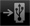

rekordbox-Felder
Top-Menü

Wenn rekordbox (iOS/Android) gestartet wird, erscheint das Top-Menü.
 Prepare
Prepare
Dient zum Erstellen verschiedener Typen von Punktinformation, Playlisten usw. als weiterführende Vorbereitungen für DJ-Auftritte.

 Load
Load
Dient zum Verknüpfen mit DJ-Playern für DJ-Auftritte.
 Connect
Connect
Dient zum Importieren von Musikdateien, die bereits mit rekordbox (Mac/Windows) auf dem Computer analysiert wurden, verschiedenen Typen von Punktinformation, Playlisten usw. zu rekordbox (iOS/Android). Dient auch zum Reflektieren der verschiedenen Typen von Punktinformation, Playlisten usw., die mit rekordbox (iOS/Android) in rekordbox (Mac/Windows) aktualisiert wurden.
 Import
Import
Dient zum Analysieren Sie der Musikdateien im mobilen Gerät und zum Hinzufügen zur rekordbox (iOS/Android)-Bibliothek.
 Help
Help
Öffnet das Hilfe-Menü.
 Settings
Settings
Dient zum Prüfen und Ändern der verschiedenen Einstellungen.
Symbolleiste
Siehe Tabelle unten für die auf der Symbolleiste unten im Bildschirm angezeigten Icons.
Icon | Beschreibung | |
 | Menu | Zeigt das Top-Menü. |
 | Browse | Kehrt zur höchsten Ebene des Browser-Felds zurück. |
 | Playing | Dient zum Öffnen des Player-Felds und zum Anzeigen des momentan spielenden Tracks. |
 | USB | Dient zum Durchsuchen der Inhalte auf einem an die DJ-Einheit (XDJ-AERO) angeschlossenen USB-Gerät und zur Wiedergabe auf der DJ-Einheit (XDJ-AERO).
|
 | Import | Dient zum Analysieren Sie der Musikdateien im mobilen Gerät und zum Hinzufügen zur rekordbox (iOS/Android)-Bibliothek. |
 | Settings | Dient zum Prüfen und Ändern der verschiedenen Einstellungen. |
 | Help | Öffnet die Hilfe-Datei (Benutzerhandbuch). |